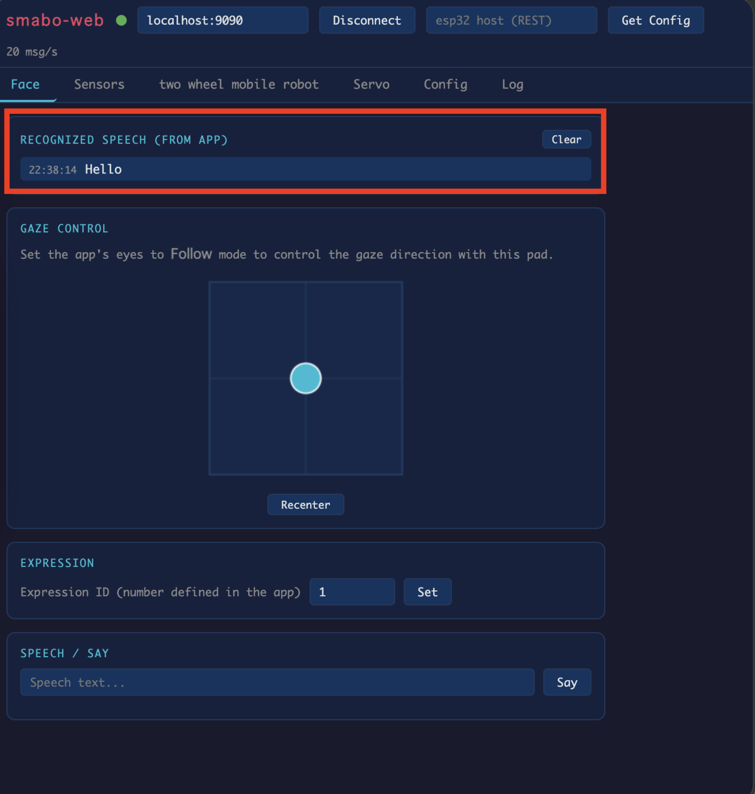
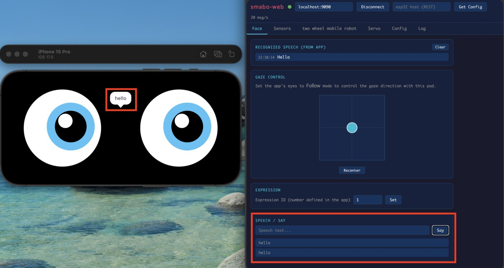
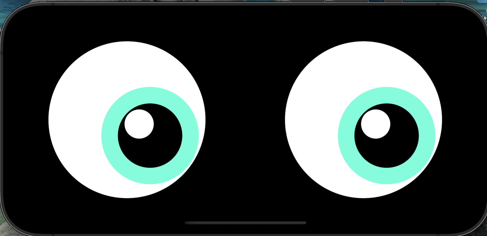
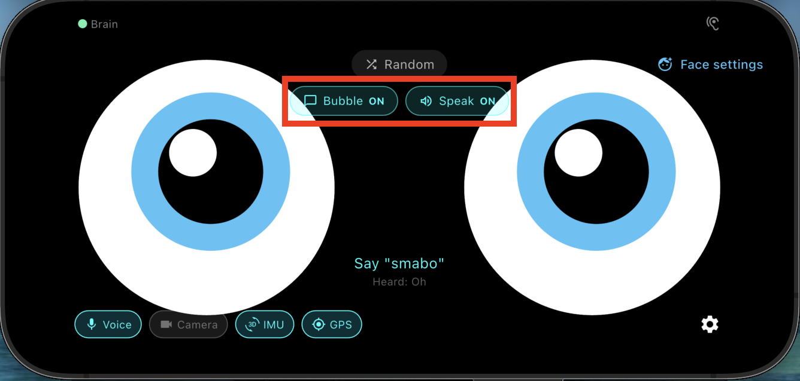

Roadmap#
This page is the guide for the "Audio Processing" node on the roadmap below.
This guide assumes you have completed the smabo-app setup.
Overview#
This page explains the Audio Processing feature of smabo.
Specifically, you will:
- Recognize speech captured by the phone's microphone
- Display the recognized text in smabo-web

- Make smabo speak a text string entered in smabo-web

Operation#
Startup Procedure#
Follow the startup procedure here.
Wake Word#
Say "smabo" near the phone to activate listening mode — smabo's eyes will light up in rainbow colors (the wake word can be changed in smabo-app Settings).
Once the eyes are rainbow-colored, speak any phrase to start speech recognition (the recognition language can also be changed in smabo-app Settings).

Speech Recognition#
After smabo's eyes return to normal, check the Recognized speech field in the Face tab of smabo-web — it will display what you said.
Text-to-Speech#
In the SPEECH / SAY section of the Face tab in smabo-web, enter any text and click the SAY button — the phone's speaker will read it aloud (the language can be changed in smabo-app Settings).
Use the Bubble ON and Speak ON buttons to toggle the speech bubble and audio output independently.

Next#
This is a terminal node on the roadmap.
To explore other features, pick another page from the roadmap.